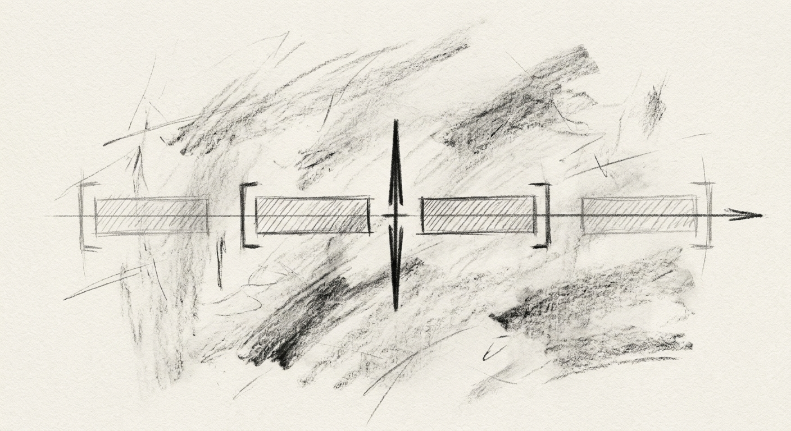
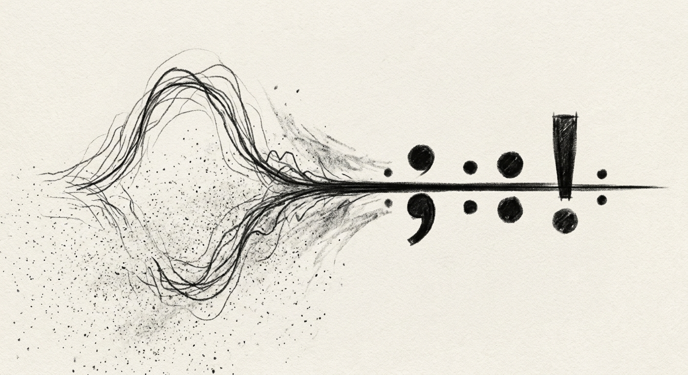
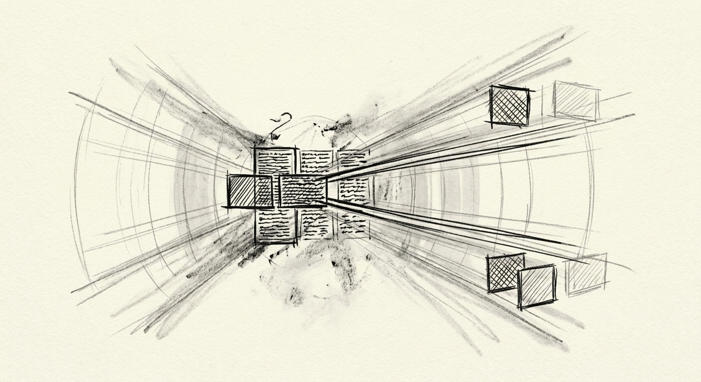
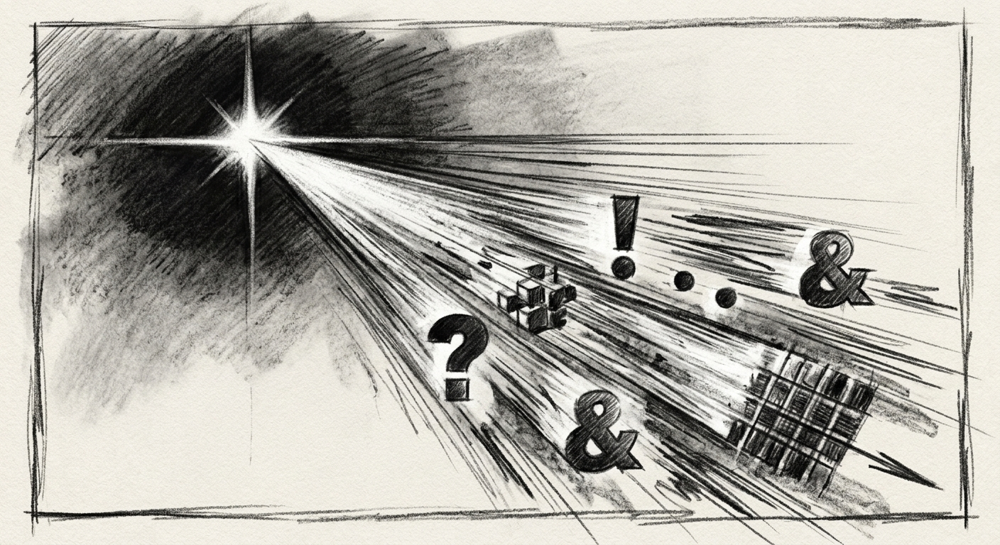

Parafoveal Vision HorizonContext Preservation
Preserves 6 to 8 characters of parafoveal lookahead alongside preceding ghost line context, keeping sentence syntax clear in working memory.
ParaFlow Reader elevates your reading experience. Letter-cueing and the ORP | Optical Recognition Point, is only half the speed-reading experience. Check that out! (👉ﾟヮﾟ)👉 500+ WPM with deep, uncompromised comprehension is not far out of reach.
Engineered around ocular physiology and flow-state reading comprehension.
Single-word flashers delete the mental-model and the ability to follow syntax of the sentences. ParaFlow Reader projects a dimmed Ghost Line above the active word and a Lookahead Horizon below it, preserving syntactic structure in working memory across every fixation. Giving your eyes the opportunity to escape the confined space by which older readers did not allow.
Mechanical speed readers tick at flat millisecond intervals. Human comprehension does not. ParaFlow scales multiple-factors with display duration dynamically matching cognitive processing pauses. But it's not a locked box, take a peek, adjust settings to your liking.
What's your style? We don't want to decide for. Is it the ORP? The Optical Recognition Point sits between 30% and 40% of word length. Or is it gentle-themes or getting into a flow-state that get's your mind going. ParaFlow Reader positions characters but you decide everything else.
The extension runs on your device and stores any used required data strictly in browser memory so it forgets it when you leave the page. Content is parsed from the larger text-body on the page and is processed through a sandbox (completely seperated from current page).
Ever tried drinking from a firehose while blinking in Morse code? Here is what actually happens inside your skull when speed-reading apps flash one word at a time.
Cognitive DimensionThe Brain Problem | Standard Page ReadingOld-School Pages | Traditional RSVP (Spritz / Flashing)Word-Flashing (Spritz Apps) | ParaFlow Sliding WindowParaFlow Sliding Window |
|---|---|---|---|
Parafoveal PreviewCheating with Peripheral Vision | 15-character perceptual span; high visual clutter.You see 15 letters ahead, but your eyes wander off into margins, notifications, and ads. | 0 characters; peripheral field masked entirely.Total tunnel vision. You are reading through a cocktail straw with zero peripheral clues. | 6–10 character lookahead horizon plus dimmed preceding line.Glances ahead just enough so your brain anticipates forthcoming phrasing naturally. |
Saccadic FatigueEye Muscle Workout (Ping-Pong) | 3 to 4 horizontal jumps per second with line-return strain.Jumping 4 times every second until your optic nerves beg for a nap. | Stationary eyes, but high cognitive load from missing preview.Eyeballs freeze dead-center, but mental gears grind trying to guess what arrives next. | Stationary foveal anchor with smooth linear text progression.Eyes relax in one sweet spot while words glide naturally into your focal center. |
Regressive BacktrackingDouble-Takes & 'Wait, What?' Moments | 15% to 25% of reading time lost to backwards scanning.You lose 25% of reading time backtracking because you spaced out for half a second. | Impossible. Missing a single word breaks sentence comprehension.Blink once and that key sentence disappears forever into the digital abyss. | Instant backwards recovery via visible Ghost Line context.The dimmed Ghost Line stays right above you, acting as an instant cognitive rearview mirror. |
Syntactic RhythmPunctuation Breathing Room | Irregular pauses determined by reader habit or page distractions (Ads | movement).Chaotic pauses dictated by tired eyes, distractions, and layout noise. | Flat millisecond pacing ignoring clause complexity.Machine-gun bursts. It blasts through a period at the exact same speed as the word 'a'. | Dynamic duration multipliers weighted by punctuation type.Breathes at commas and pauses at periods like an articulate human storyteller. |
SubvocalizationThe Voice Inside Your Head | Constrained by the acoustic phonological loop at 200–250 WPM.Your inner narrator mumbles every single syllable, hitting a hard speed ceiling at 250 WPM. | Severed abruptly, degrading working memory recall.Mutes your inner voice so violently you recognize letters but forget the plot. | Decoupled progressively as visual chunking expands to 500+ WPM.Gently expands your recognition into multi-word visual chunks so speed unlocks naturally. |
A little taste of a speed reader. Adjust WPM to see the dynamic pauses, and test how the Peripheral Lines help with sentence recovery.
Transform long-form articles, newsletters, and technical documentation into something you lookforward to reading.
Transitioning from phonological vocalization or voiced-reading to direct orthographic pattern recognition follows measurable stages. Find your pace with the following benchmarks:

Lock foveal focus to the vertical reticle tick-marker. Keep three-word chunks active with lookahead enabled. Train the extraocular muscles to hold position rather than jumping laterally.

Above 350 WPM, vocal cords and the inner speech loop cannot keep pace. The visual cortex takes over direct lexical access. Punctuation weighting prevents working memory overload.
Reduce chunk size to two words. Rely on the lookahead line to pre-parse clauses before they reach center focus. The Ghost Line catches syntactically complex subordinate clauses.

Deploy single-word spotlighting with maximum punctuation weighting. This mode extracts arguments, variable names, and factual data points from dense technical documentation.

Positioning yourself during speed-reading sessions is argueably more important than achieveing high wpm! To prevent muscle strain and eye fatigue. Follow these simple guidelines.
Placing the Paraflow's Speed Reading window in the center of a monitor is not the best as it forces a horizontal gaze that actually causes neck strain after 20 minutes.
ParaFlow anchors active word streams at 38% from the screen top, precisely aligning with the human eye's natural 10° to 15° downward resting angle. This eliminates ocular muscle tension and promotes effortless neutral-spine reading endurance.
Viewing distance directly governs the subtended visual angle of rendered words across the retina. Sitting at arm's length optimizes orthographic resolution.
At 60 centimeters, a two-word chunk spans approximately 1.8 degrees of your visual angle. This fits entirely inside the high-acuity the center of your focus without triggering non-voluntary shifts in focus, preventing dry eye and cognitive distrators.
Ocular muscle drivers are benefited most from relaxing exercises. It's a bit backwards to think about but they tend to need flexing rather than unfocus. Here are 3 simple exercises:
Expands the perceptual span to utilize parafoveal vision; reduces eye jumps (fixations) and backward drifting (regressions).
Paraflow is a browser extension that is sandboxed in your browser of choice which enables a secure environment and your decicsion on which pages the extension are used.
ParaFlow is available for the following browsers as an extension.
Formal definitions from cognitive psychology and ocular motor research.
The retinal zone spanning 2° to 5° around the foveal center. Acuity is lower than foveal vision, but the visual cortex extracts word length, initial consonants, and space boundaries to program the amplitude of upcoming saccades.
The ocular fixation point within a word that minimizes letter recognition latency. For Latin scripts, this point sits between 30% and 40% of the total word length from the initial character.
A dimmed rendering of the preceding text line displayed directly above active reading coordinates. It provides working memory with an immediate syntactic anchor when parsing multi-clause sentences.
Configurable upcoming text lines displayed below the active word chunk. It provides parafoveal preview data so the brain preprocesses downstream syntactic units before fixating upon them.
A dynamic scaling algorithm that extends tick duration at punctuation boundaries: 1.35x for commas and semicolons, 1.8x for sentence terminators, and 2.2x for paragraph breaks.
An involuntary backwards eye jump triggered when sentence comprehension fails. In conventional reading, regressions account for 15% to 25% of total ocular movements.